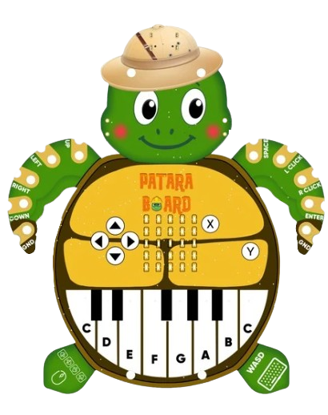
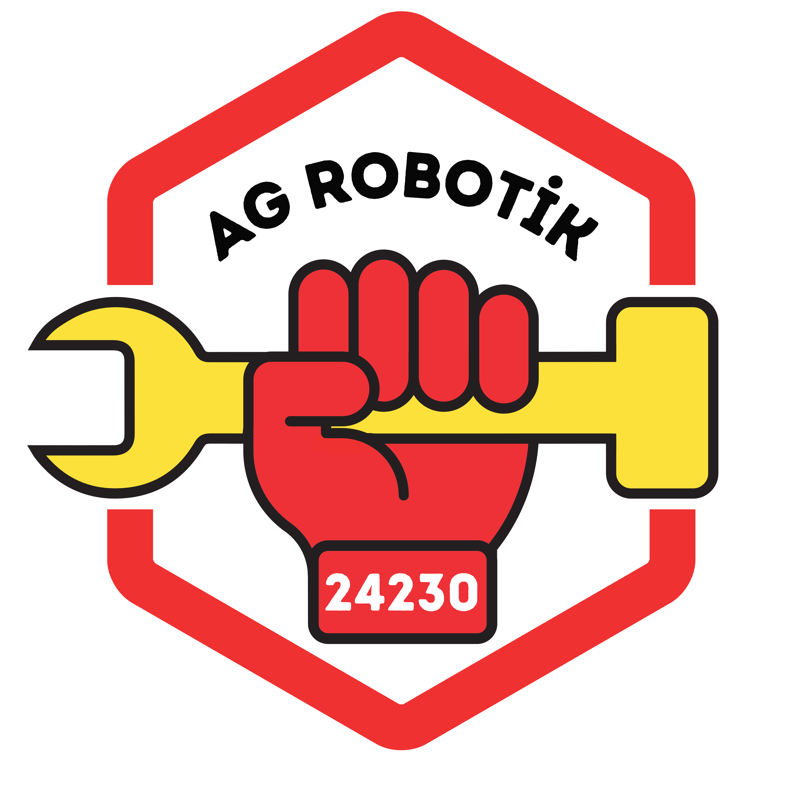

Kodlamayı ve elektroniği bir kaplumbağayla öğrenmeye ne dersin? İşte doğadan ilham alan bir icat: Patara Board!

Patara, Antalya'da Türkiye'nin en uzun kumsallarından biri — ve nesli tehlike altındaki caretta caretta deniz kaplumbağalarının yumurtalarını bıraktığı korunan bir yuva!
İşte bu minik kart, o değerli kaplumbağalara saygı için tıpkı bir kaplumbağa gibi tasarlandı. Başındaki kâşif şapkasını gördün mü? Tıpkı senin gibi bir doğa dedektifi!
Kabuğundaki minik ışık ekranıyla resimler ve harfler çizer, tuşlarıyla oyun oynar, alttaki piyano tuşlarıyla müzik yapar! Onunla kodlamayı, elektroniği ve müziği eğlenerek öğrenirsin — üstelik bilgisayara bağlanıp oyunları bile kontrol edebilir.

Bu dergiyi hazırlayan FTC 24230 — AG Robotik takımı, Robotistan ile işbirliği yaparak Patara Board için eğitim içerikleri hazırlıyor. Teknolojiyle doğayı bir araya getiriyoruz!
Anne caretta caretta, yıllar sonra bile yumurtalarını bırakmak için doğduğu kumsala geri döner! İşte bu yüzden Patara gibi kumsalları korumak çok önemli. Teknoloji de doğayı hatırlatabilir.
Bilim insanları da doğadan öğrenir: uçakların kanadı kuşlardan, hızlı trenlerin burnu yalıçapkını kuşundan ilham aldı. Buna biyomimikri denir. Patara da doğadan ilham alan minik bir örnek!
Patara gibi kartlarla ilk kodunu yaz, ilk melodini çal, ilk oyununu yap. Belki bir gün doğayı koruyan bir icat da senden gelir!